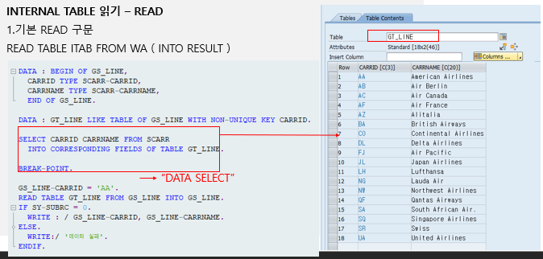

20221004 - READ
기본 READ 구문
READ TABLE ITAB FROM WA ( INTO RESULT )RESULT: READ 결과를 저장하는 WORK AREA
- 성공하면 SY-SUBRC = 0
- 실패하면 SY-SUBRC = 4



TABLE KEY 이용
READ TABLE ITAB WITH TABLE KEY 조건 ( INTO RESULT )RESULT: READ 결과를 저장하는 WORK AREA
- 성공하면 SY-SUBRC = 0
- 실패하면 SY-SUBRC = 4


WORK AREA 할당


DATA: GS_STUDENT TYPE ZSTU_15.
DATA: GT_STUDENT TYPE TABLE OF ZSTU_15.
DATA: BEGIN OF GS_TEL,
ZCODE LIKE ZSTU_15-ZCODE,
ZKNAME LIKE ZSTU_15-ZKNAME,
ZTEL LIKE ZSTU_15-ZTEL,
END OF GS_TEL.
DATA: GT_TEL LIKE TABLE OF GS_TEL.
GS_STUDENT-ZCODE = 'SSU-01'.
GS_STUDENT-ZKNAME = '오해원'.
GS_STUDENT-ZENAME = 'Haewon Oh'.
APPEND GS_STUDENT TO GT_STUDENT.
GS_STUDENT-ZCODE = 'SSU-02'.
GS_STUDENT-ZKNAME = '리아'.
GS_STUDENT-ZENAME = 'Lea'.
APPEND GS_STUDENT TO GT_STUDENT.
GS_TEL-ZCODE = 'SSU-01'.
GS_TEL-ZKNAME = '오해원'.
GS_TEL-ZTEL = '000-0000-0000'.
APPEND GS_TEL TO GT_TEL.
GS_TEL-ZCODE = 'SSU-02'.
GS_TEL-ZKNAME = '리아'.
GS_TEL-ZTEL = '111-1111-1111'.
APPEND GS_TEL TO GT_TEL.
CLEAR: GS_STUDENT, GS_TEL.
BREAK-POINT.
LOOP AT GT_STUDENT INTO GS_STUDENT.
MOVE-CORRESPONDING GS_STUDENT TO GS_TEL.
READ TABLE GT_TEL WITH KEY ZCODE = GS_TEL-ZCODE INTO GS_TEL.
GS_STUDENT-ZTEL = GS_TEL-ZTEL.
MODIFY GT_STUDENT FROM GS_STUDENT.
CLEAR: GS_STUDENT.
ENDLOOP.


COMPARING 옵션
- READ 구문의 결과값에 비교 조건을 추가
- 즉, COMPARING 구문 다음에 기술된 필드들이 WORK AREA 값과 인터널 테이블에 존재하는 값이 같으면 SY-SUBRC = 0을 반환, 같지 않으면 2를 반환
READ TABLE ITAB INTO WA COMPARING F1


TRANSPORTING 옵션
- READ한 결과를 해당 칼럼만 타겟에 저장


INDEX


READ BINARY SEARCH
READ TABLE시 데이터를 빠르게 찾아내기 위해 사용
- 이진 탐색 알고리즘 기법을 사용해 반반 나눠 중간에 있는 걸 감사하고, 동일한 키를 가진 레코드 중에 첫 번째를 찾아서 SEARCH
선행조건 - SORT를 통해 데이터 정럴


in-class practice
- 주문내역에서 정보를 가져와 특별구매기간 2022년 9월 16일부터 20일까지 가장 먼저 주문한 고객에게 사은품을 제공하는 로직을 구현
- 배송내역에서 정보를 가져와 구매한 ID별 제품이 2개 이상이면 사은품 체크: ‘X’
- 단, 배송상태가 배송 중이면 제외
LOOP 갯수 줄이기
"1.주문내역에서 정보를 가져와 특별구매기간 2022년 9월 16일부터 20일까지 가장 먼저 주문한 고객에게 사은품을 제공하는 로직을 구현
"사은품 체크 : 'X'.
DATA : BEGIN OF GS_ORDER.
INCLUDE STRUCTURE ZEDU15_001.
DATA : Z_GIFT TYPE C, "사은품지급 관리
END OF GS_ORDER.
DATA : GT_ORDER LIKE TABLE OF GS_ORDER.
SELECT * FROM ZEDU15_001 INTO CORRESPONDING FIELDS OF TABLE GT_ORDER.
SORT GT_ORDER BY Z_JDATE.
CLEAR : GS_ORDER.
LOOP AT GT_ORDER INTO GS_ORDER.
IF ( GS_ORDER-Z_JDATE >= '20220916') AND ( GS_ORDER-Z_JDATE <= '20220920').
AT FIRST.
GS_ORDER-Z_GIFT = 'X'.
MODIFY GT_ORDER FROM GS_ORDER TRANSPORTING Z_GIFT.
ENDAT.
ENDIF.
CLEAR : GS_ORDER.
ENDLOOP.
*BREAK-POINT.
"2. 배송내역에서 정보를 가져와 구매한 ID별 제품이 2개이상이면 사은품 체크 : 'X'
"단 배송상태가 배송중이면 제외
DATA : BEGIN OF GS_DELIVERY.
INCLUDE STRUCTURE ZEDU15_002.
DATA : Z_GIFT TYPE C, "사은품지급 관리
END OF GS_DELIVERY.
DATA : GT_DELIVERY LIKE TABLE OF GS_DELIVERY.
DATA : BEGIN OF GS_GIFT,
ZID LIKE ZEDU15_002-ZID, "주문자
Z_NUMBER LIKE ZEDU15_002-Z_NUMBER, "재고번호
Z_GIFT TYPE C, "사은품지급 관리
END OF GS_GIFT.
DATA : GT_GIFT LIKE TABLE OF GS_GIFT.
SELECT * FROM ZEDU15_002 INTO CORRESPONDING FIELDS OF TABLE GT_DELIVERY.
SORT GT_DELIVERY BY ZID.
*BREAK-POINT.
CLEAR : GS_DELIVERY, GS_GIFT.
LOOP AT GT_DELIVERY INTO GS_DELIVERY.
IF GS_DELIVERY-ZZ_STATUS NE '2'.
MOVE-CORRESPONDING GS_DELIVERY TO GS_GIFT.
APPEND GS_GIFT TO GT_GIFT.
ENDIF.
ENDLOOP.
SORT GT_GIFT BY ZID.
LOOP AT GT_GIFT INTO GS_GIFT.
AT NEW ZID.
GS_GIFT-Z_GIFT = 'X'.
MODIFY GT_GIFT FROM GS_GIFT TRANSPORTING Z_GIFT.
ENDAT.
CLEAR : GS_GIFT.
ENDLOOP.
*BREAK-POINT.
LOOP AT GT_DELIVERY INTO GS_DELIVERY.
READ TABLE GT_GIFT WITH KEY Z_NUMBER = GS_DELIVERY-Z_NUMBER INTO GS_GIFT.
GS_DELIVERY-Z_GIFT = GS_GIFT-Z_GIFT.
MODIFY GT_DELIVERY FROM GS_DELIVERY.
CLEAR: GS_DELIVERY, GS_GIFT.
ENDLOOP.
DATA: BEGIN OF GS_ORDER.
INCLUDE TYPE ZEDU15_001.
DATA: Z_STATUS_NAME TYPE C LENGTH 10,
END OF GS_ORDER.
DATA: GT_ORDER LIKE TABLE OF GS_ORDER.
DATA: BEGIN OF GS_DELIVERY.
INCLUDE TYPE ZEDU15_002.
DATA: ZZ_STATUS_NAME TYPE C LENGTH 10,
END OF GS_DELIVERY.
DATA: GT_DELIVERY LIKE TABLE OF GS_DELIVERY.
DATA: BEGIN OF GS_ZEDU15_001.
DATA: Z_NUMBER TYPE ZEDU15_002-Z_NUMBER,
ZID TYPE ZEDU15_002-ZID,
MATNR TYPE MATNR,
ZNAME TYPE ZEDU15_002-ZNAME,
Z_SUM TYPE ZEDU15_002-Z_SUM,
Z_STATUS TYPE ZEDU15_001-Z_STATUS,
Z_STATUS_NAME LIKE GS_ORDER-Z_STATUS_NAME,
ZZ_STATUS TYPE ZEDU15_002-ZZ_STATUS,
ZZ_STATUS_NAME LIKE GS_DELIVERY-ZZ_STATUS_NAME,
END OF GS_ZEDU15_001.
DATA: GT_ZEDU15_001 LIKE TABLE OF GS_ZEDU15_001.
SELECT * FROM ZEDU15_001 INTO CORRESPONDING FIELDS OF TABLE GT_ORDER.
SELECT * FROM ZEDU15_002 INTO CORRESPONDING FIELDS OF TABLE GT_DELIVERY.
*BREAK-POINT.
LOOP AT GT_ORDER INTO GS_ORDER.
MOVE-CORRESPONDING GS_ORDER TO GS_ZEDU15_001.
APPEND GS_ZEDU15_001 TO GT_ZEDU15_001.
ENDLOOP.
LOOP AT GT_ZEDU15_001 INTO GS_ZEDU15_001.
READ TABLE GT_DELIVERY WITH KEY Z_NUMBER = GS_ZEDU15_001-Z_NUMBER INTO GS_DELIVERY.
MOVE-CORRESPONDING GS_DELIVERY TO GS_ZEDU15_001.
IF GS_ZEDU15_001-Z_STATUS = '1'.
GS_ZEDU15_001-Z_STATUS_NAME = '주문'.
ELSE.
GS_ZEDU15_001-Z_STATUS_NAME = '반품'.
ENDIF.
IF GS_ZEDU15_001-ZZ_STATUS = '1'.
GS_ZEDU15_001-ZZ_STATUS_NAME = '주문완료'.
ELSE.
GS_ZEDU15_001-ZZ_STATUS_NAME = '배송진행'.
ENDIF.
MODIFY GT_ZEDU15_001 FROM GS_ZEDU15_001.
ENDLOOP.
BREAK-POINT.